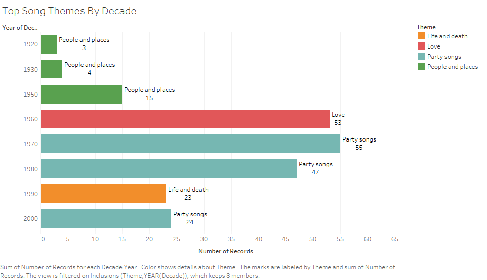
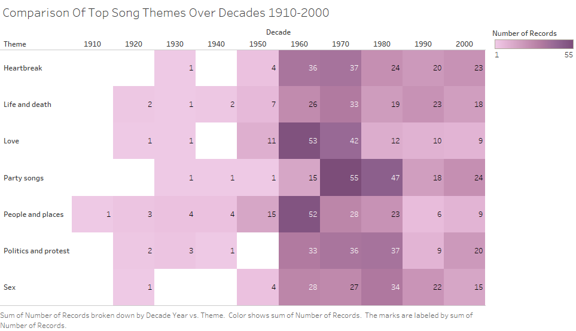
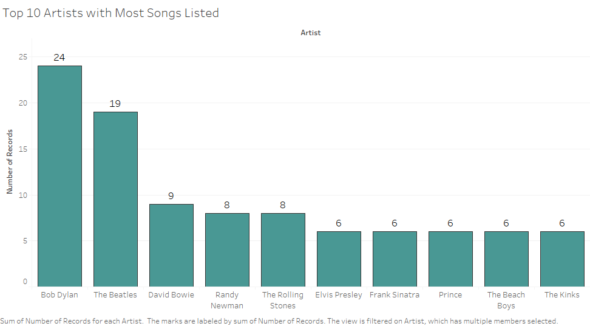
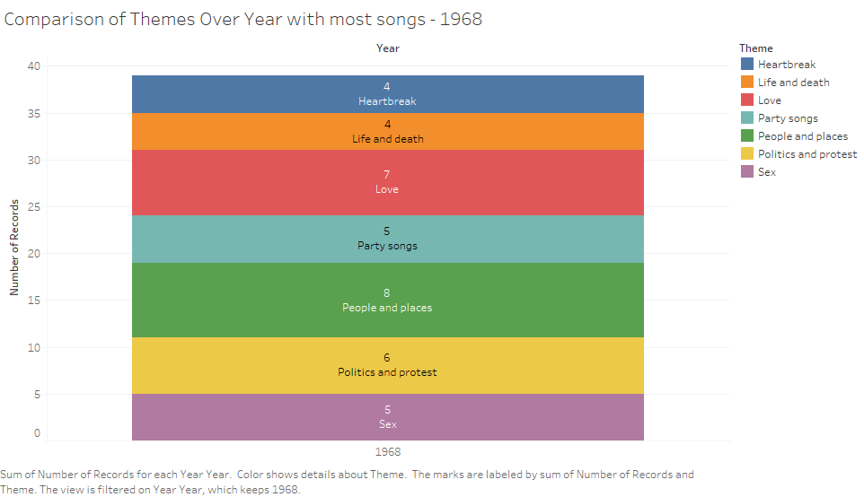
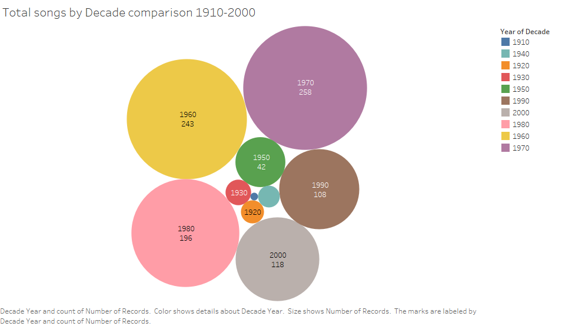
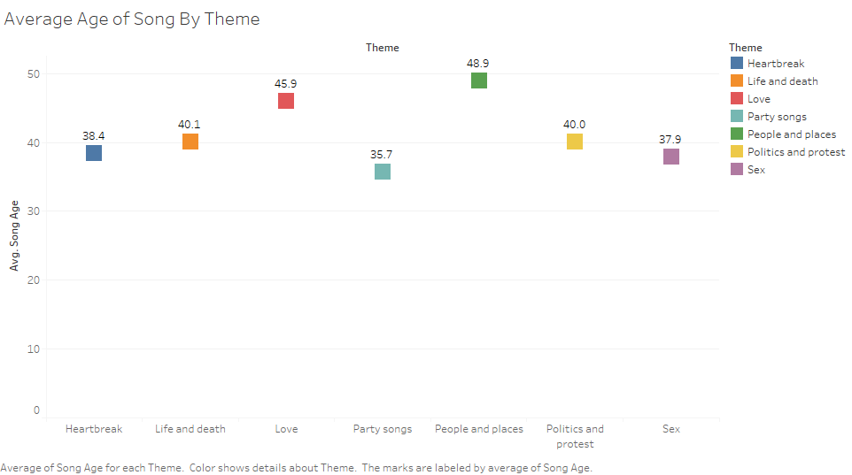
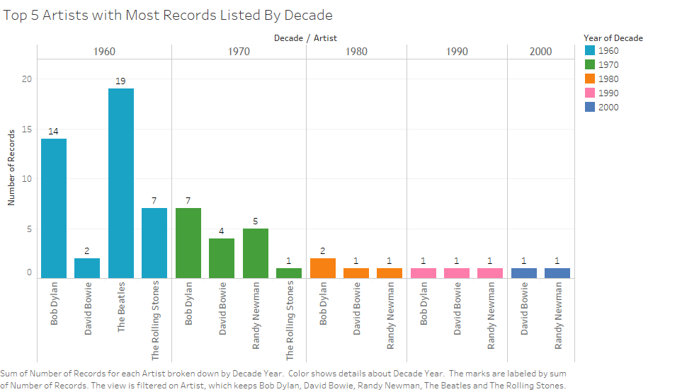
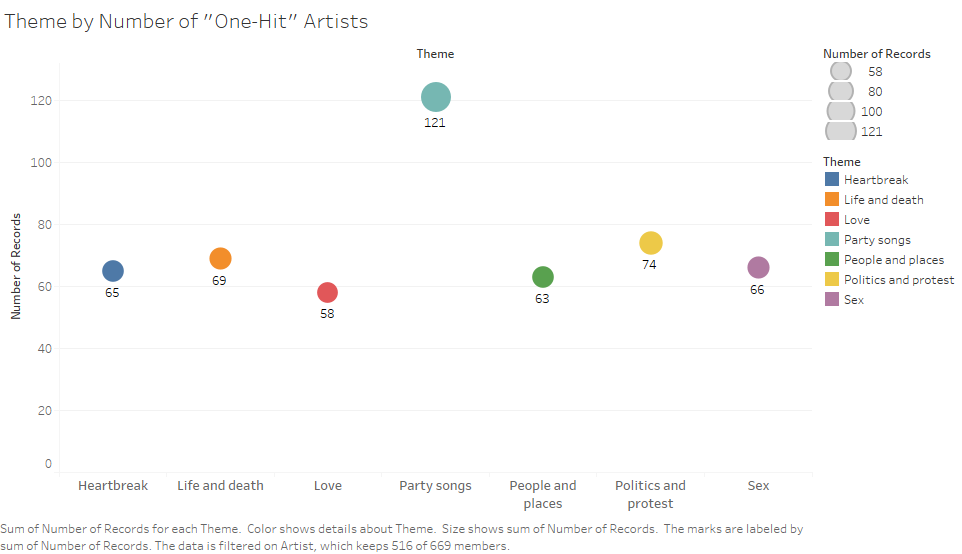
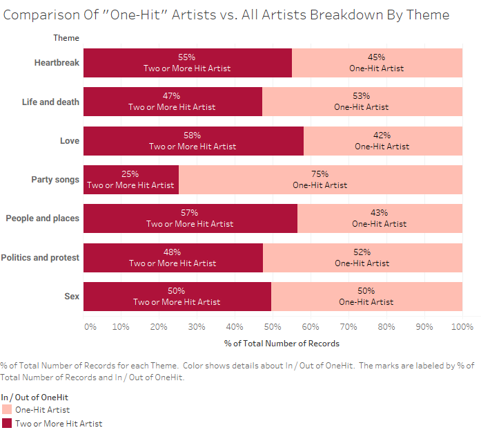
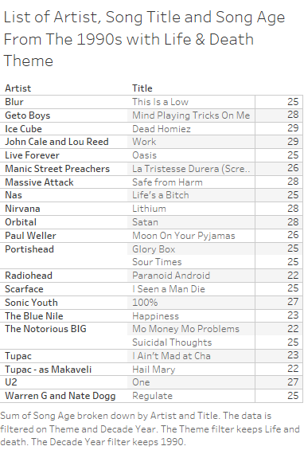

Love songs were the top theme of the 1960s and Party songs were the top theme of 1970s and 1980s thanks in part to disco and funk music. In the 1990s, partying songs fell in favor of life and death probably due to the era of grunge and the emergence of hardcore rap genres breaking into the mainstream.
Assignment 2: Exploratory Data Analysis
Eva Najera
Dataset
"Top 1000 Songs To Hear Before You Die"
This data set is a list of songs picked by a long running British daily newspaper, The Guardian.
The dimensions include song theme, song title, song artist, song year, and a spotify_url. I am interested
in music and about the history of it as a whole. The arts, especially music, are a reflection of the times
and I wanted to explore that.
The data is available online at: Top 1000 Songs To Hear Before You Die
Initial Analysis Questions
- What song themes were most prevalent for each decade?
- Which decade and year had the most top songs that made the list?
- Who were the top artists based on total number of songs?
- Are most of the songs listed fairly old?
Discoveries & Insights


A more detailed look at every song theme over each decade. The 1960s saw a huge increase in number of songs in total and about nearly every theme. The 1970s and 1980s had most party songs but dropped of significantly in the 1990s.

Bob Dylan and The Beatles were the artists that had considerably more top songs than the rest.

The year 1968 had a balanced spread of songs themes. It was a year where no one theme dominated another.

The 1970s were the decade where most of the top songs came from with 1960s not being far behind. Surprisingly, the 2000s scored more than the 1990s. Usually, the older songs fare better on lists like these.

At the time this list was made it was 2008. I calculated age based on the current year 2019 and used an average based on all the song ages within that theme. It was not surprising to see that songs about Love, People And Places, and Life & Death were older while the themes of Sex, Partying, and Politics and Protest were the "younger" songs.

This basically shows of the top 5 artists with most records listed, how many records did they produce each decade. The Beatles made all their contributions in the 1960s while Bob Dylan had listed songs over a 4 decade span and David Bowie spanned over 5 decades.

The party theme had subtantially more artists with a single contribution. It is more easier to judge a good party song than it is to judge a good song based on a more mature theme. Party songs are able to transcend generations more easily.

Looking further into one-hit artist contributions, we see the percentage of party song artists who had just one song listed was considerably more than artists who had more than one song listed. Songs about partying are more easier and fun to create so there may be more quality songs to choose from.

The 1990s is one of my favorite decades for music and most of these song titles I know but a lot I don't remember. It is interesting to see just how some of these songs remain timeless. I also like that this list does not include too many big commercial hits.
Summary
Lists like these always tend to favor older songs in general because it is much easier to tell which songs still stand the test of time. Most of the songs from this list came from 1960s, 1970s, and 1980s. I think that it is difficult to pick a newer song based on a more mature theme because it is hard to predict what song will resonate with people especially for a list such as "Songs to Hear Before You Die". This list was interesting to look at although music is such a subjective topic but fun to analyze and think about.